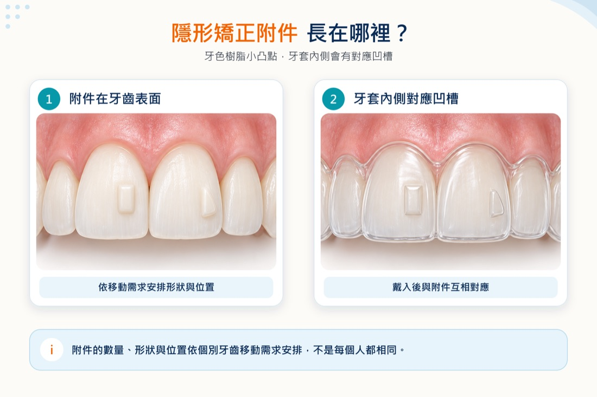
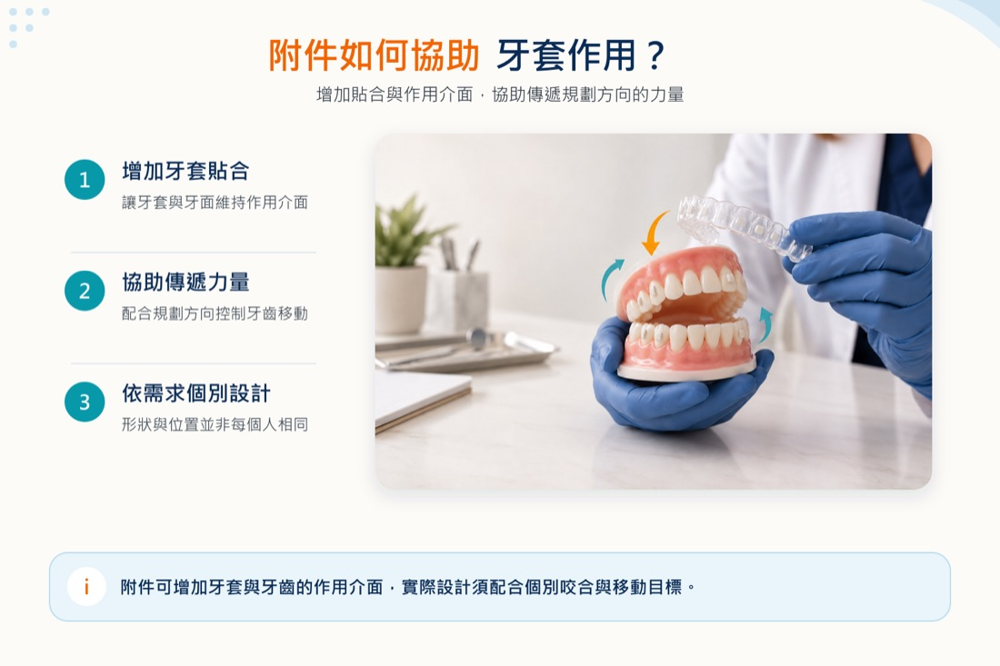
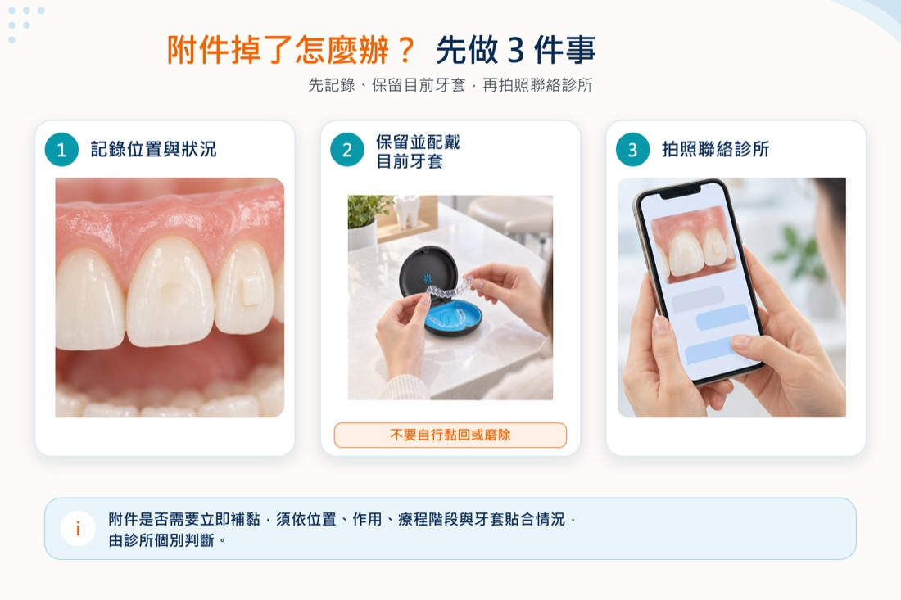

前言
第一次戴上隱形牙套時，有些人會發現牙齒表面多了幾個牙齒顏色的小凸點，常被稱為「附件」、「豆豆」或「小顆粒」。它們不是食物殘渣，也不代表牙齒突然變形，而是醫師依治療計畫黏著在特定牙齒上的樹脂結構。
隱形牙套雖然能包覆牙齒，但面對某些旋轉、傾斜、垂直移動或需要增加固位的情況，只靠光滑的牙面未必容易傳遞預定力量。附件可讓牙套在指定位置有較明確的施力或抓握區域，協助控制牙齒移動。
不過，不是每位接受隱形矯正的人都需要相同數量、形狀或位置的附件。是否需要、裝在哪些牙齒、何時裝設與移除，都應由醫師根據咬合、牙齒移動目標及使用的矯正系統個別規劃。

※附件的數量、形狀與位置會依個別牙齒移動需求安排，不是每個人都相同。
本文重點
- 隱形矯正附件通常是黏在牙齒表面的牙色樹脂，用來協助牙套固位或傳遞力量。
- 並非每顆牙、每位患者或每一階段都一定需要附件。
- 附件通常比傳統矯正器小，但前牙位置、光線、牙齒顏色與染色狀況都會影響可見度。
- 剛裝附件後可能感覺牙套較緊、取戴較困難或口腔暫時不適；若持續疼痛或刮傷，應聯絡診所。
- 附件掉落時不要自行黏回或磨整，應保留目前牙套並詢問診所是否需要提早回診。
- 療程結束或治療計畫調整時，應由醫療人員移除並處理殘留樹脂。
隱形矯正附件是什麼？為什麼牙齒上會有小凸點？
附件多以牙科複合樹脂製作，黏著在牙齒表面，再由透明牙套包覆。牙套內側會有與附件相對應的凹槽，戴入後兩者互相接觸，使牙套更穩定地貼合牙齒，或在治療設計需要的位置產生作用。
可以把附件理解成牙套與牙齒之間的「施力介面」，但它不是越多越好，也不是所有牙齒移動都靠同一種附件完成。研究顯示，附件設計會受到移動方向、牙齒外形、力學需求與牙套材料等因素影響；現有證據中仍有不少來自實驗室研究，臨床表現也會受患者配戴、牙套貼合及個別治療反應影響。
「隱適美附件」是許多人熟悉的搜尋名稱，但附件並非只存在於單一品牌。不同隱形矯正系統的設計、名稱與使用方式可能不同，不能直接互相比照。
每個人都需要附件嗎？數量和位置一樣嗎？
不一定。醫師會依牙齒排列、咬合問題、預計移動方式與治療階段判斷是否使用附件。有些人可能只在少數牙齒上需要，有些人的範圍較多；也可能在療程中依重新掃描或計畫調整而增加、移除或更換。
附件不一定只放在看起來最歪的牙齒上。有些附件的目的可能是協助特定牙齒移動，有些則提供固位或支抗。因此，不能只憑附件數量推測療程難度，也不能以他人的配置判斷自己的治療是否正常。
若您正在評估台南隱形矯正，諮詢時可詢問哪些牙齒預計需要附件、外觀可能如何，以及附件是否會隨治療階段改變。
附件在牙齒移動與牙套貼合中有什麼作用？
牙齒表面多為圓弧形，透明牙套若只包覆光滑牙面，面對部分移動方向時可能缺少足夠的接觸面。附件的形狀與位置可改變牙套接觸牙齒的方式，常見目的包括：
- 增加牙套固位，減少特定區域翹起或不貼合
- 協助牙齒旋轉、傾斜或其他方向的控制
- 配合牙齒垂直移動或咬合調整
- 在其他牙齒移動時提供相對穩定的支撐
這些是一般力學方向，不代表裝上附件就能保證牙齒完全依模擬畫面移動。治療仍需要依指示配戴、定期回診，並由醫師觀察牙套貼合與牙齒實際反應。

※附件可增加牙套與牙齒的作用介面，但實際設計須配合個別咬合與移動目標。
隱形矯正附件會很明顯嗎？會影響美觀嗎？
附件通常使用接近牙齒顏色的材料，體積也比傳統矯正托槽小，但不等於完全看不見。是否明顯可能受到以下因素影響：
- 附件位於前牙或後牙
- 數量、大小、形狀與排列方式
- 牙齒原本顏色與樹脂材料色澤
- 說話、微笑角度與光線反射
- 咖啡、茶、菸品或色素造成的表面染色
- 附件周圍是否累積牙菌斑
前牙附件通常比後牙更容易被近距離看見。若外觀是重要考量，應在治療前直接告訴醫師；但附件的位置首先要符合治療需要，不能在沒有評估力學影響的情況下自行要求刪除或改位。
附件怎麼裝上去？過程會痛嗎？
常見流程是先清潔並處理牙面，再使用定位模板把樹脂放到預定位置，以光照方式使材料硬化，最後檢查多餘樹脂、牙套貼合與咬合。實際步驟會依材料、系統及診所流程不同。
黏著附件本身通常不涉及鑽磨牙齒形成孔洞，但過程中可能需要保持嘴巴張開、隔濕及多次戴脫模板。裝好後，牙套與附件接觸會讓固位增加，因此第一次戴入或取下時可能覺得較緊。
「會不會痛」不能保證每個人都一樣。剛更換牙套或新裝附件後，可能出現短暫壓力、痠軟或口腔黏膜摩擦感。若疼痛明顯加劇、持續不退、附件邊緣反覆刮傷、牙套無法就位，或咬合突然受到明顯干擾，應聯絡診所，不要自行磨附件。
戴脫牙套時，為什麼有附件會比較緊？
附件會增加牙套的抓握與作用，因此取戴感受可能和沒有附件時不同。建議依診所教學，從指定位置逐步鬆開牙套，再沿牙弓取下；避免只拉單側、扭折牙套，或用尖銳物品直接撬附件。
如果牙套長時間沒有完全壓入附件凹槽，出現明顯空隙或特定位置一直翹起，可能代表取戴方式、配戴時間、附件完整性或牙齒追蹤情況需要確認。不要自行跳到下一副牙套，應先詢問診所。
隱形矯正附件掉了怎麼辦？需要立刻補嗎？
附件可能因黏著狀況、咬到硬物、取戴方式或其他外力而脫落。掉落時通常不需要驚慌，但也不要自行判斷「少一顆沒關係」。不同附件負責的作用不同，是否影響目前階段、需不需要補黏，以及何時回診，都要由醫師查看治療計畫與牙套貼合後決定。
發現附件掉落時可以：
- 記下大概是哪一顆牙、何時發現及有無疼痛。
- 依原指示保留並配戴目前牙套；若牙套無法就位或造成傷口，先聯絡診所確認。
- 拍攝清楚照片傳給診所，詢問是否需提早回診。
- 不要使用家用黏著劑自行黏回，也不要自行磨除殘留樹脂。

※附件掉落是否需要立即補黏，須依位置、作用、療程階段與牙套貼合個別判斷。
如何降低附件脫落或牙套受損的機會？
- 依診所示範的方向戴入與取下牙套
- 避免用力扭折牙套或直接拉扯單一位置
- 不用牙齒咬開包裝、瓶蓋或其他物品
- 進食前依指示取下牙套，避免戴著牙套咀嚼一般食物
- 避免用指甲或尖銳器具刮附件
- 牙套不戴時放入收納盒，避免變形或遺失
- 若某個附件經常脫落，回診時告知醫師檢查咬合與黏著狀況
即使照護正確，附件仍可能因個別狀況脫落；是否脫落不應直接解讀為療程失敗。
附件周圍怎麼清潔？喝咖啡會染色嗎？
附件周圍多了邊緣與轉折，較容易殘留牙菌斑。每天仍要清潔牙齒表面、牙齦邊緣及牙縫，並依醫師建議使用牙刷、牙線或牙間清潔工具。若附件周圍持續出血、腫脹、出現白斑、蛀牙疑慮或明顯色素堆積，應回診檢查。
咖啡、茶、菸品與其他深色食物可能使牙齒、附件材料或附件邊緣的表面染色更明顯。重點不是自行刮除或使用強效漂白方式，而是減少長時間接觸、進食後清潔，並讓醫療人員判斷是外來色素、樹脂變色、牙菌斑還是牙齒本身問題。
完整的取戴、飲食、飲料及牙套清潔方式，可延伸閱讀〈隱形牙套怎麼清潔？吃飯、喝咖啡與牙套變黃的處理重點〉。
療程結束後附件怎麼移除？會傷牙齒嗎？
療程結束、重新規劃或附件任務完成後，醫療人員會移除樹脂並處理牙面殘留材料。患者不應自行摳除、用工具磨除或試圖溶解附件。
研究顯示，附件移除後的樹脂殘留、牙面粗糙度與琺瑯質改變，會受到使用工具、操作方式、視野及拋光流程影響；目前部分證據仍以體外研究為主，不能簡化成任何一種方法都「完全不影響琺瑯質」。正確說法應是由受訓醫療人員在可控制的情況下移除並檢查牙面，盡量減少殘留與不必要的牙面損失。
移除後若摸起來粗糙、持續敏感或看到顏色差異，應請醫師確認是殘留樹脂、表面染色或其他牙齒狀況，不要自行研磨。
常見問題（FAQ）
Q1：隱形牙套上的豆豆就是附件嗎？
多數患者口中的「豆豆」是黏在牙面的樹脂附件，但透明牙套療程也可能使用按鈕、橡皮筋切口或其他輔助裝置。若不確定自己看到的是哪一種，應向診所確認。
Q2：每一顆牙齒都要裝附件嗎？
不一定。數量與位置取決於咬合、牙齒形態、預定移動及治療系統，不能用他人的附件配置判斷自己的療程。
Q3：附件會讓隱形牙套變得很明顯嗎？
附件多使用牙色材料，但前牙附件、光線反射、附件數量與表面染色都可能增加可見度。隱形矯正較低調，不等於完全看不見。
Q4：附件掉了一顆，可以等下次例行回診再處理嗎？
不一定。應先聯絡診所，讓醫師依掉落位置、附件作用、目前療程階段及牙套貼合判斷是否需要提早補黏。
Q5：附件掉了，牙套還要繼續戴嗎？
一般不建議自行停戴或跳號。可先保留目前牙套並聯絡診所；若牙套無法完全戴入、明顯變形、疼痛或造成傷口，應儘快取得個別指示。
Q6：附件會刮嘴或讓牙齒痠痛多久？
部分人在剛裝設或更換牙套後會有短暫摩擦或壓力感，但程度與持續時間因人而異。若不適明顯、持續惡化或造成傷口，應聯絡診所檢查，不能只靠固定天數判斷正常與否。
Q7：可以要求前牙不要裝附件嗎？
可以在治療前提出美觀顧慮，但能否調整要由醫師評估對牙齒移動與療程目標的影響。自行拒絕必要附件可能改變可達成的治療方向。
Q8：附件拆掉後，牙齒會留下凸起或色差嗎？
醫療人員會清除附件及殘留樹脂並檢查牙面。若仍感到粗糙或看到色差，需由醫師判斷是樹脂殘留、染色或牙齒本身差異，不應自行刮磨。
了解附件的作用，遇到掉落或不適才能正確處理
隱形矯正附件不是裝飾，也不是每個人都完全相同的固定配備。它的形狀、數量與位置，應服務於個別牙齒移動與牙套貼合需求。治療前除了詢問牙套品牌與外觀，也應了解是否需要附件、可能放在哪裡，以及掉落或不適時如何聯絡診所。
如果您正在評估台南隱形矯正或台南隱適美，可於諮詢時說明對美觀、工作場合、取戴及清潔的顧慮，讓醫師在檢查與治療規劃時一併討論。想比較隱形牙套與固定式矯正，也可閱讀〈台南隱適美 vs 傳統牙套差在哪？療程時間與適合族群比較〉。
若想安排評估，可加入文心牙醫官方 LINE，由診所協助預約。是否需要附件、附件位置、掉落後處理與預期治療結果，仍須由醫師依個別檢查及治療計畫判斷。
本文為一般口腔衛教資訊，不能取代醫師診斷與個別治療計畫。若出現持續疼痛、牙套無法就位、口腔傷口、牙齒明顯鬆動或其他異常，請聯絡診所接受評估。